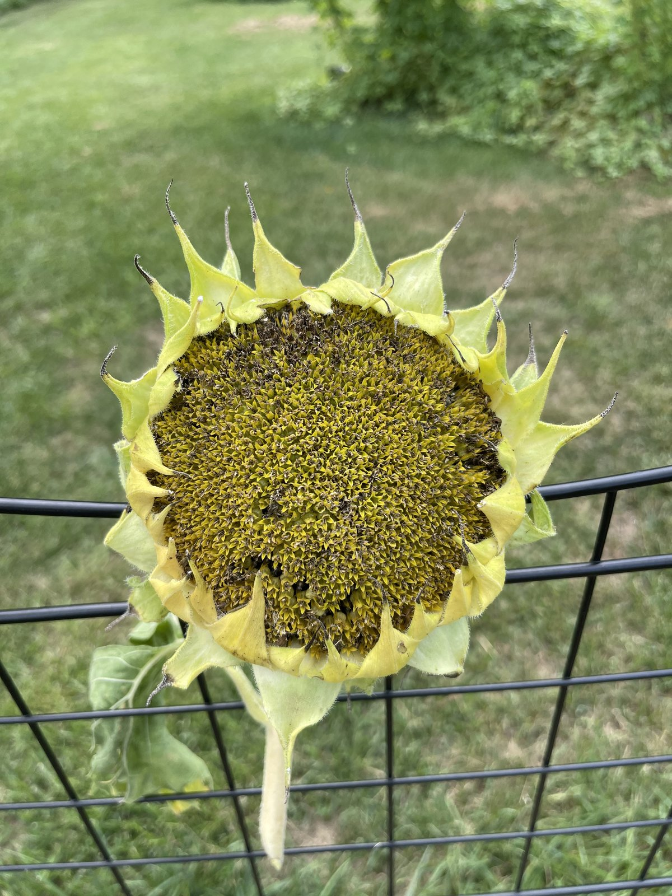

A sunflower looks finished weeks before it is. The petals drop early and mean nothing. The signal you want is on the back of the head, and once you know it you can call it from ten feet away.
Glassboro, NJ · Zone 7aCovers: ripeness, birds and squirrels, Mammoth, dwarf branching
Step zero
Turn the head over
Everything about timing happens on the back. Grab the head, tip it toward you, and look at the disc of green behind the petals.
The one thing to do
Ignore the petals. Turn the head over and squeeze a bract. Green and fleshy means wait. Yellow-brown, with bracts that are brown and papery and crackle between your fingers, means go.
The back goes green, then lemon yellow, then yellow-brown. Lemon yellow is the stage that fools people, because it looks finished from a distance. It isn't. Read the whole list, not the color on its own.
Ready to cut
The back of the head is yellow-brown, past lemon yellow.
The bracts, those pointed leaves ringing the back, are brown, dry and papery. They crackle when you bend one.
The petals have withered and mostly fallen off.
The tiny florets on the face have shriveled up and gone crusty.
The head is bowed over and heavy.
Seeds are plump, hard, and striped. A few come loose when you rub a thumb across them.
Not yet
The back is green, pale green, or a clean creamy lemon yellow with no brown in it.
Bracts are still thick, fleshy and hairy, with only the very tips browning.
The leaf right behind the head is still green and firm.
Seeds are flat, soft, or pale gray with no stripe.
Seeds sit tight and nothing comes loose under your thumb.
The face still has yellow florets standing up on it.
The bract test beats the color test. Color is hard to judge in bright sun and varies by variety. Bend one bract instead. Fleshy and hairy, it bends. Ready, it crackles and snaps.
Ready. This is the color you are waiting for.Not ready, and this is the one that catches people. Creamy lemon back, but the bracts are still thick and green and the leaf behind it is still alive. Two to three more weeks.
Roughly, this lands 30 to 45 days after the flower opens. Use that as a rough calendar, never as the decision. Weather moves it by a week in either direction.
Now check the face. It has to agree with the back before you cut.
Ready. Crusty brown florets, striped hulls you can see.

Not ready. A pincushion of yellow florets still standing up, and not one striped hull showing. The plant is still filling these.
The decision
Finish on the plant, or cut early?
You have to pick one before you touch anything, and the birds are the reason.
Seed that ripens fully on the plant tastes better and stores better. That's the whole case for waiting. The case against waiting is that goldfinches, house sparrows and squirrels can strip a head in two days.
So there are two honest answers.
Finish on the plant, protected. Best flavor, best seed. Requires covering the head. Do this if you want the seed for eating or for planting next year.
Cut early and finish indoors. Do this if birds are already working the head, if rain is coming, or if frost is close. The seed still fills out. The flavor is a step down.
Almost everyone should pick the first one. The next section is how you make it hold.
The long game
Keeping the head on the plant
Every extra week on the stalk is better seed. Here's how to buy those weeks without feeding the neighborhood.
The one thing to do
Bag the head for birds. Cage the head for squirrels. They are two different problems, and a bag that stops a goldfinch is a snack wrapper to a squirrel.
Know which animal you have
Watch the damage for one day and you'll know. They work completely differently.
Birds land on the face and pick seed out from the top. Goldfinches, house sparrows, chickadees and jays all do it. They start as soon as the seeds firm up, which is weeks before the head is ripe. They take a little at a time and they leave the head on the plant. Crucially, they do not chew. Any barrier they can't reach through is enough.
Squirrels climb the stalk or jump onto the head from something nearby. They chew through paper, cloth, plastic mesh and screen without slowing down. Often they cut the whole head off and carry it away, which is why a head can vanish overnight with no mess underneath.
So the rule is simple. Material stops birds. Structure stops squirrels.
Bird damage
Head still attached, seeds picked out in patches.
Empty hulls and bits of floret scattered on the face.
Damage appears gradually, a little more each day.
You've seen small birds sitting on the head.
Squirrel damage
Whole head gone, or a clean bite through the stem.
Head found on the ground several feet away, stripped.
Chew marks on a bag, a tie, or the stalk itself.
It happened all at once, usually overnight or at dawn.
Bagging, which handles birds completely
Put the cover on once the petals start turning brown. That's roughly the same week the back of the head goes lemon.
Slide the bag down over the face, gather it at the neck, and tie it on the stem below the head, not around the seeds. A twist tie, a rubber band or a length of garden twine all work.
The bag does a second job people forget. It catches every seed that shatters out while you aren't looking, so a head that drops early doesn't drop into the grass.
What you make it from matters more than it sounds, because a wet head molds. Whatever you use has to dry out fast after rain.
Material
Stops birds
Handles rain
Stops squirrels
Notes
Tulle or organza drawstring bag
Yes
Yes, dries fast
No
The best soft option. Breathes, reusable, drawstring already fitted, you can see through it
Cheesecloth
Yes
Yes, dries fast
No
Best airflow of anything here. Use a double layer, the weave is loose
Fine mesh produce or paint strainer bag
Yes
Yes
No
Tough, cheap, washes out and lasts years
Brown paper bag
Yes
No, turns to pulp
No
Cheapest thing that works. Fine in a dry spell. Replace it after every soaking
Aluminum window screen
Yes
Yes
Slows them, doesn't stop them
Rigid and awkward to fit around a head. Squirrels chew it given time
Plastic bag
Yes
No, traps water
No
Never. You get mold instead of seed
Never plastic, and never over a wet head. Bag in the morning after the dew has gone. A head sealed up damp will mold from the middle out, and you won't see it until you open the bag.
Tied on the stem below the head, not cinched around the seeds. Ugly for two weeks, worth it.
Squirrels, which is the harder half
Three defenses, listed by how well they actually hold.
1. A hardware cloth cage. This is the one that works. Half-inch galvanized hardware cloth, rolled into a cylinder around the head and zip-tied down the seam, with a cap on top. Leave two or three inches of air all the way around so the head can still dry.
It's the only thing on this page a squirrel cannot get through. It's also the ugliest, so save it for the heads you actually care about.
2. A baffle on the stalk. Useful, not reliable. A cone or a length of stovepipe around the stalk, at least four feet off the ground, extending at least two feet out. That's standard bird-feeder geometry and it transfers directly.
Be honest about what it buys you. Penn State Extension's own line on baffles is that squirrels cannot get past one, although they often do. Treat it as a tax on the squirrel, not a wall.
3. Distance, which decides whether the baffle matters at all. A baffle only works if the stalk is the only way up. Standard guidance is to keep feeders at least ten feet from anything an animal can launch from. Same idea here. A fence, a shed roof, a deck rail, a low branch or a neighboring trellis turns your baffle into decoration.
Look at your patch from a squirrel's eye line before you build anything. Sometimes moving one tomato cage is the whole fix.
Half-inch hardware cloth, seam zip-tied, air space all round.Baffle on the stalk, four feet up. Only works if the stalk is the only route.
The pepper trick, and why it only bothers the squirrel
Capsaicin, the heat in chili peppers, burns mammals and does nothing to birds. That isn't folklore. It's a receptor difference that's been mapped.
Both birds and mammals carry a receptor called TRPV1, which is what registers burning heat. Jordt and Julius showed in 2002 that the chicken version responds to actual heat and to acid, exactly like the rat version, but not to capsaicin. Move one domain of the rat receptor into the chicken receptor and the chicken receptor starts feeling chili.
That single difference is why capsaicin-treated birdseed is a real product. The squirrel hates it and the finches never notice.
How to use it here. Dust or spray the stalk and the baffle, not the head, if you plan on eating the seed. Reapply after every rain.
Where it stops working. It's a repellent, not a barrier. It washes off, and animals build tolerance to repellents over time. Use it to make your patch the less convenient option on the block. Don't use it as your only defense.
If you net the whole patch, mesh size is the whole decision
Netting a bed is reasonable when you have a row of heads rather than three. The danger isn't the sunflowers, it's what gets caught in it.
Use mesh under 5mm, and 2mm if you can get it. Wide "bird netting" with holes over a centimeter is what tangles birds, snakes and lizards.
Run the finger test. If your finger fits through a hole, the mesh is big enough to catch an animal by the head or the wing.
Keep it drum tight. Slack netting is what animals get wrapped in. Taut netting they bounce off.
Close it at the bottom. Tie it in around the stems or peg it to the ground, so nothing crawls underneath and then can't find its way out.
Walk it every single day. A trapped bird in full sun dies in hours.
Things that don't work, so you can skip buying them
Fake owls and plastic hawks. Both birds and squirrels work out the trick in days. Moving one every few days helps a little. Leaving it in one spot helps not at all.
Reflective tape, pie tins, pinwheels. Same story on the same timeline. Extension guidance is consistent that no frightening device has been proven effective.
Grease or oil on the stalk. It coats fur and feathers, which is a real welfare problem. Don't.
The one soft measure that has actual support is a decoy. Penn State's recommendation for feeders is to put dried corn, peanuts or cracked corn well away from what you're protecting. It won't stop a determined squirrel. It changes which meal is cheapest, and most days that's enough.
What I'd actually do
Birds only. One tulle bag per head, tied on the stem below the head. That's the whole job.
Birds and squirrels. Tulle bag, plus a half-inch hardware cloth cylinder around the head. The bag keeps the seed in, the cage keeps the squirrel out.
Heavy squirrel pressure. Add a baffle four feet up the stalk, move the plants away from fences and branches, and start a decoy feed pile at the far end of the yard.
A whole row to protect. Fine mesh netting under 5mm, pulled tight, closed at the bottom, walked every morning.
Then leave them alone. Every week you buy is a fuller seed.
The job
Cut, dry, thresh, clean
Four moves. The only one people get wrong is the drying, and they get it wrong by rushing it.
Cut with a foot of stem
Sharp pruners, about 12 inches below the head. That stem is your handle and your hanging hook. Cut on a dry morning after the dew has burned off.
Hold a bucket or a bag under the head while you cut. Ripe heads shed.
Hang it upside down for two to three weeks
Somewhere dry, warm and moving with air. A garage, a shed, a covered porch, a spare room with a fan. Out of direct sun.
Give each head space. Heads touching each other is how you get mold on both.
Slip a paper bag over each head and tie it at the stem. It catches everything that falls and keeps the mice off.
Done when: the back is dark brown and hard, and seeds come away with almost no pressure.
Thresh the seeds out
Over a big tub or a bin liner, do one of these:
Rub two dry heads face to face. Fastest method, and oddly satisfying.
Rub the face with a gloved hand, working in circles from the edge inward.
Work a stiff brush across it for anything stubborn.
Wear gloves. Dry heads are scratchy and the bracts have a bite to them.
Winnow out the chaff
You now have seed mixed with dry petal bits and floret husks. Set a box fan on low. Pour the mix slowly from one bowl into another in front of it, outside.
Seed is heavy and drops straight down. Chaff is light and blows sideways. Two or three passes gets it clean.
No fan? A breezy afternoon and two bowls does the same job.
What you are after. Striped, hard, and dry enough to rattle.
Variety notes
Mammoth
Mammoth Russian, Mammoth Grey Stripe, and the giant types sold as Russian Giant. Nine to twelve feet tall, one head, up to a foot across.
Mammoth is the easy one and the best one. Everything above applies, with four differences.
1. It is one harvest, not many
A Mammoth puts everything into a single head. All of that seed ripens together. You watch one back, you make one call, you cut once. Compare that to the dwarf section below and you'll see why people find dwarfs fiddly.
2. The head is heavy and it will snap
A big Mammoth head can run several pounds wet. Support it with one hand underneath while you cut with the other. Cut through the stem cleanly rather than letting the head tear its own way off.
If the stalk is taller than you, cut the whole stalk down first, then take the head off it on the ground.
3. It holds moisture, so it needs real airflow
A twelve inch head is a thick, damp disc. It's the most likely head in your garden to mold while drying. Hang it alone with air on all sides, and give it the full three weeks. A fan in the room is not overkill.
Check it at two weeks. If the center still feels cool and slightly damp to the back of your hand, it is not done.
4. This is the seed you save and the seed you eat
Mammoth types are open-pollinated heirlooms. Save seed from them and you get Mammoths again next year. That is not true of most other sunflowers, and it's covered in the section below.
The seed is also big, gray striped, and thin-hulled, which is exactly what you want for roasting.
Scale matters here. Put a hand in the shot.Big, gray striped, thin hulled. The eating seed.
Variety notes
Dwarf and branching types
Teddy Bear, Music Box, Sunspot, Autumn Beauty and the multi-head cut-flower sunflowers. Many small heads instead of one big one.
These are a different job, not a smaller version of the same job. Three things change.
1. Nothing ripens at the same time
A branching plant opens blooms across five or six weeks. So the seed ripens across five or six weeks too. There is no single harvest day.
Walk the patch every three days. Check each head's back on its own. Cut the ones that are ready and leave the rest. You'll go back six or seven times before the plant is finished.
Label as you go if you care which plant a seed came from. Six small heads in one bag become anonymous fast.
2. Small heads dry fast
One to two weeks, not three. They're thin and they have far less flesh to give up. Check at one week rather than assuming.
Because they're small, a paper lunch bag per head works well. Fold the top, write the variety on it, stand them in a box.
3. Check whether there's anything in there at all
This is the part nobody warns you about. Many dwarf and branching sunflowers sold today are F1 hybrids, and many of the cut-flower branching types are bred pollenless so they don't drop pollen on a tablecloth.
Pollenless varieties are made using cytoplasmic male sterility. The plant produces no working pollen of its own. If nothing else pollinated it, the head fills with empty hulls.
The test takes ten seconds. Pull five seeds off a dry head and crack them with your thumbnail. A full kernel means you have seed. Flat, papery, empty hulls mean the head is decorative and that's all.
If your pollenless plants did set seed, something else pollinated them, usually a pollen-bearing sunflower nearby. That seed is viable but crossed. It will grow, and it will not look like the parent.
One plant, many heads, no two at the same stage.The whole guide in one photo. Backs up, left to right.
Left is a dud from a pollenless head. Right is what you want.
After the harvest
Eating seed and planting seed part ways here
Same harvest, two different endings. Decide before you turn the oven on, because heat is a one-way door.
Step
Seed for eating
Seed for planting next year
Rinse
Yes, cold water, then pat dry
No. Skip it. Water works against you here
Salt soak
Optional. Overnight in brine, then drain
Never
Heat
Roast at 300°F for 30 to 40 minutes, stirring
Never. Heat kills the embryo
Drying
Just until surface dry before roasting
One to two weeks, single layer, out of sun, under 95°F
Container
Airtight jar or bag
Paper envelope inside a sealed glass jar
Where
Pantry, eat within a few months
Cool, dark, dry. Fridge is ideal
Drying seed you intend to plant
Spread it one layer deep on a sheet pan, a screen, or coffee filters. Keep it out of direct sunlight. Stir it with your hand once a day.
Stay under 95°F. Do not use a food dehydrator and do not put it in the oven on low. Both cook the embryo while the seed still looks fine.
Give it one to two weeks. A properly dry seed snaps rather than bends.
Storing it
Put the seed in a labeled paper envelope. Put a second envelope of silica gel in beside it. Seal both inside a clean glass jar.
After one to two weeks in the jar, the silica gel has pulled the last of the moisture out and the seed is stable. Keep the jar somewhere cool, dark and dry. A fridge is the best spot in most houses.
Label the envelope with the variety, the color, the date, and where it came from. You will not remember in March. Nobody does.
How long it stays good
Plan on three years for properly dried and stored sunflower seed. Germination drops off gradually rather than falling off a cliff.
Test it before you commit a bed. Roll ten seeds into a damp paper towel, seal it in a sandwich bag, leave it somewhere warm. Count the sprouts at seven to ten days. Seven out of ten is a good packet. Three out of ten means sow three times as thick, or start over.
The catch
Whether it grows back the same
Harvesting seed is easy. Getting the same flower again is a separate question with a real answer.
Two things decide it.
Open-pollinated or hybrid. Open-pollinated varieties, which includes all the heirloom Mammoths, come back true as long as they were pollinated by their own kind. F1 hybrids do not. Seed from an F1 gives you a scattered mix, most of it weaker than the parent. Check the seed packet you planted from. It will say.
What else was flowering nearby. Sunflowers are pollinated by bees, and bees do not respect your variety plan. If you grew a Mammoth twenty feet from a red branching type, expect crosses. Commercial growers isolate by half a mile. In a home garden you either grow one variety that year, or you accept a surprise.
Neither of those is a reason not to save. A crossed sunflower is still a sunflower and it's usually a good one. Just know which of the two you have before you promise anyone a Mammoth.
Type
Comes back true?
Worth saving?
Mammoth Russian / Mammoth Grey Stripe
Yes, if isolated from other varieties
Yes. The reliable one
Named open-pollinated types (Teddy Bear, Autumn Beauty)
Penn State Extension on baffles, and on the decoy feed pile. Theirs is the line about squirrels not being able to get past a baffle, although they often do.